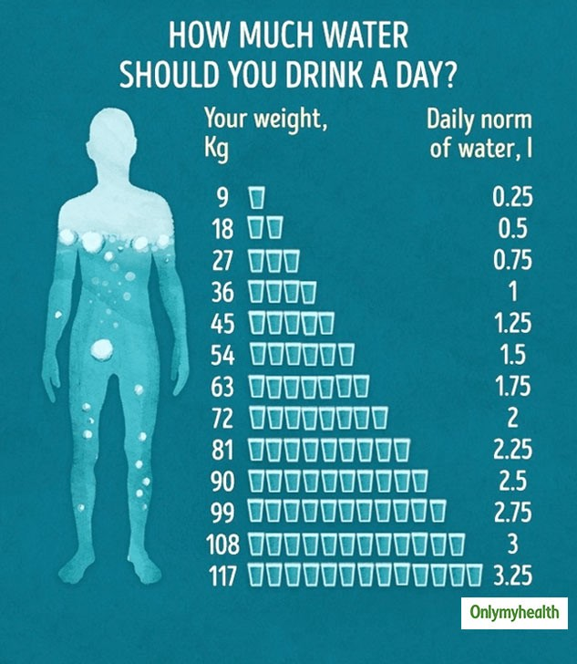
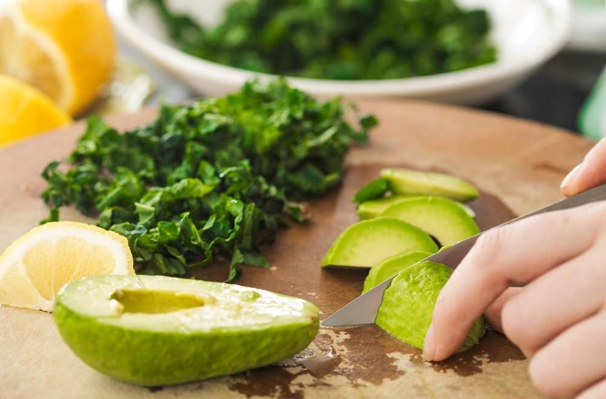
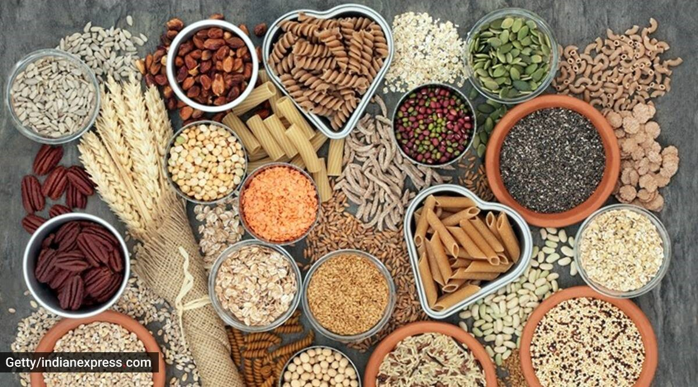
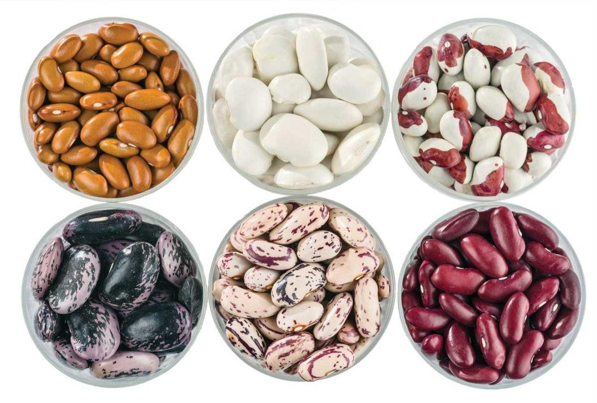
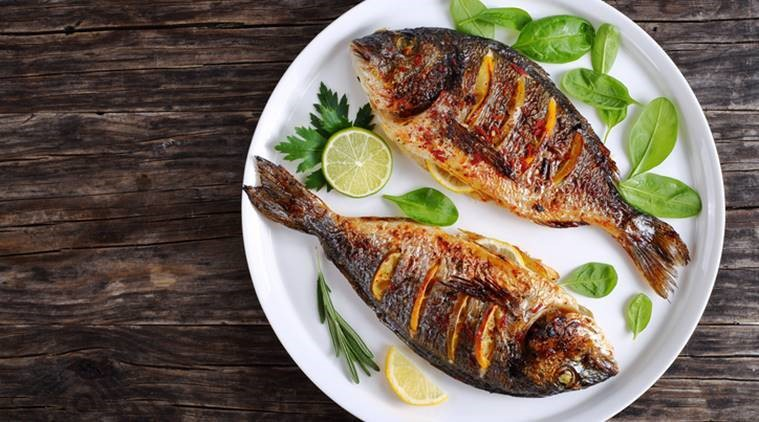
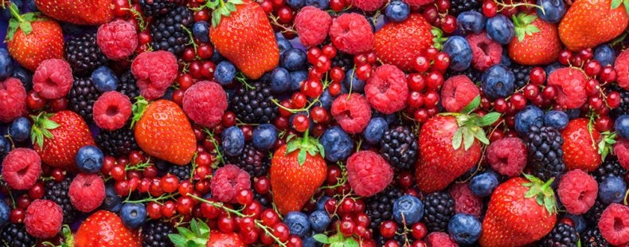
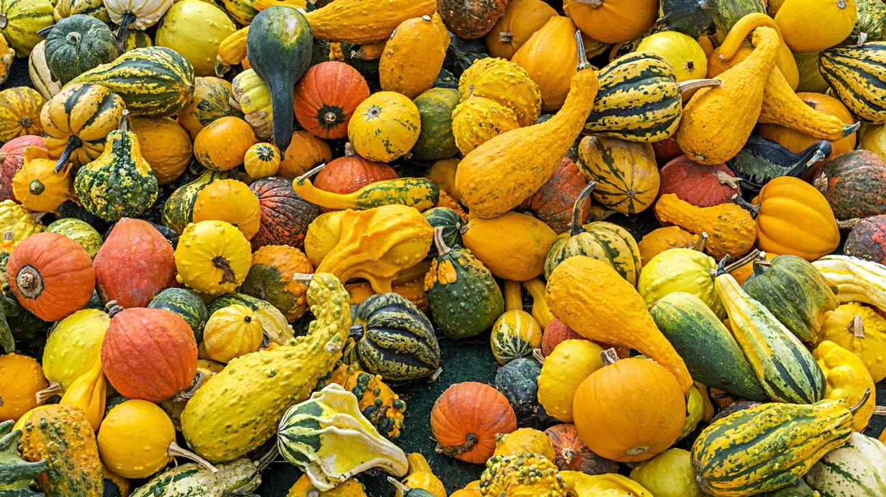
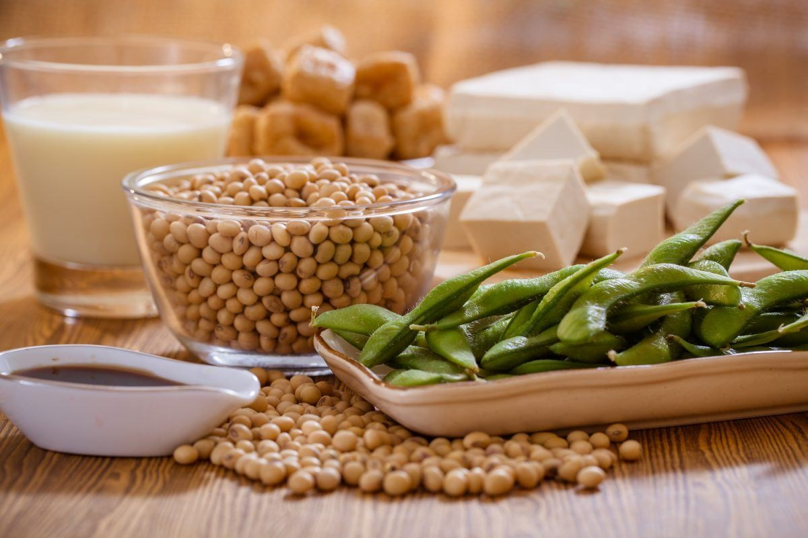
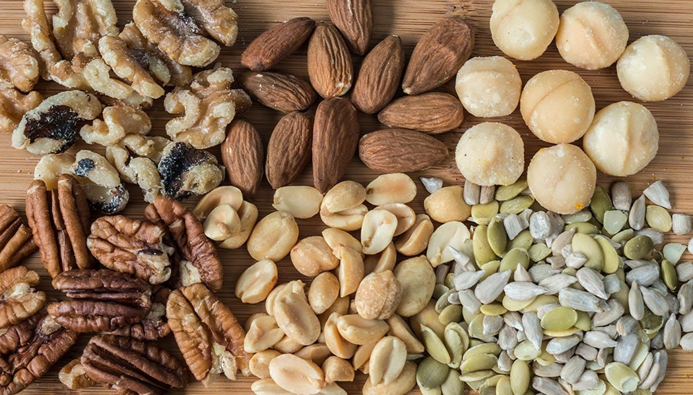
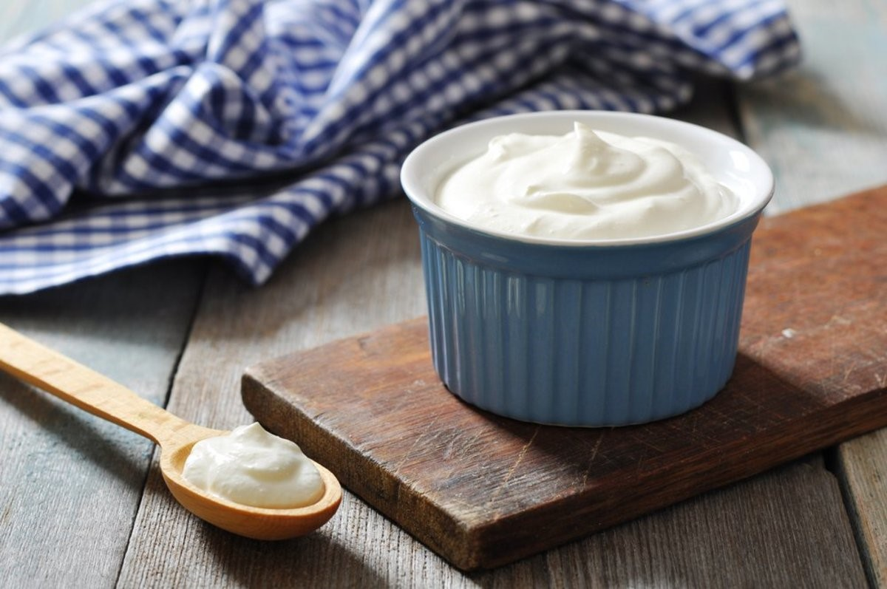

- Water
- Dark Green Vegetables
- Whole Grains
- Beans and Lentils
- Fish
- Berries
- Winter Squash
- Soy
- Flaxseed, Nuts and Seeds
- Organic Yogurt
Drink 8 to 12 cups of water daily.
Eat dark green vegetables at least three to four times a week. Good options include broccoli, peppers, brussel sprouts and leafy greens like kale and spinch. It can also help improve cognitive function and helps lower the risk of death from all causes.
Eat whole grains sat least two or three times daily. Look for whole wheat flour, rye, oatmeal, barley, amaranth, quinoa or a multigrain. A good source of fiber has 3 to 4 grams of fiber per serving. A great source has 5 or more grams of fiber per serving.
Try to eat a bean-based meal at least once a week. Try to add legumes, including beans and lentils, to soups, stews, casseroles, salads and dips or eat them plain.
Try to eat two to three serving of fish a week. A serving consists of 3 to 4 ounces of cooked fish. Good choices are salmon, trout, herring, bluefish, sardines and tuna.
Include two to four servings of fruit in your diet each day. Try to eat berries such as raspberries, blueberries, blackberries and strawberries.
Eat butternut and acorn squash as well as other richly pigmented dark orange and green colored vegetables like sweet potato, cantaloupe and mango.
25 grams of soy protein a day is recommended as part of a low-fat diet to help lower cholesterol levels. Try tofu, soy milk, edamame soybeans, tempeh and texturized vegetable protein (TVP).
Add 1 to 2 tablespoons of ground flaxseed or other seeds to food each day or include a moderate amount of nuts – 1/4 cup – in your daily diet.
Men and women between 19 and 50 years of age need 1000 milligrams of calcium a day and 1200 milligrams if 50 or older. Eat calcium-rich foods such as nonfat or low-fat dairy products three to four times a day. Include organic choice.
